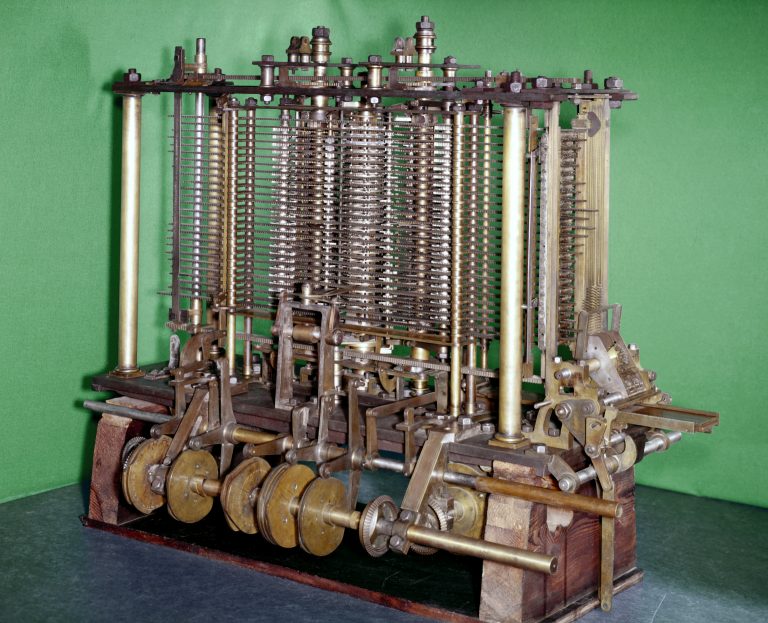

Charles Babbage & The Analytical Engine
English mathematician Charles Babbage (1791-1871) is often called the "Father of Computing." He invented several important mechanical devices called difference engines and analytical engines. Difference engines were efficient calculators. Analytical engines were much more sophisticated. First described in 1837, they moved beyond simple calculation to more general tasks much like modern computers. For example, they could repeat commands and figure out "if-then" logic. Unfortunately, Babbage died before he could finish building his analytical engine.
Analytical Engine
https://lh3.googleusercontent.com/0aGQQ8PEFDWlixXZZ6GRD1-bvC-jm0POmU1kS6-yLF-3IHQ6lYWASQ3ScO2NetBJXRtkP7g=s105
